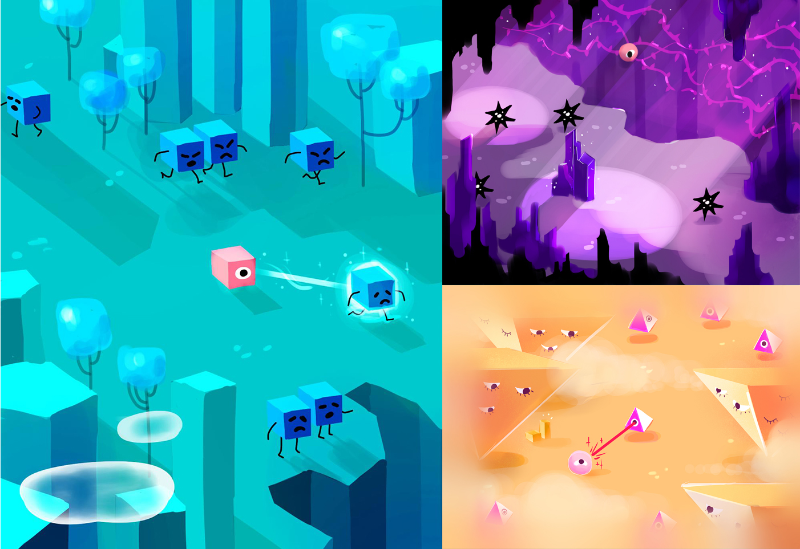
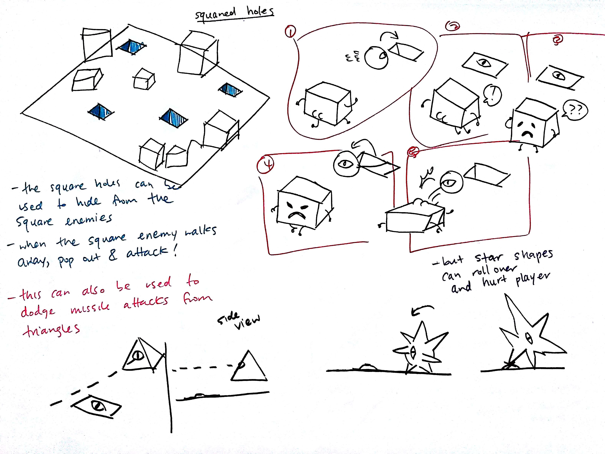
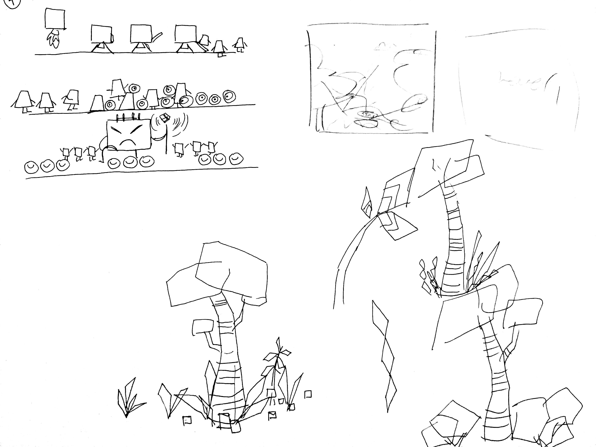
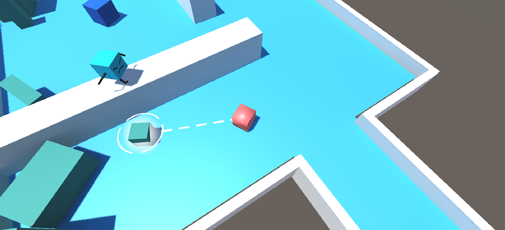

Beep
A 3D action adventure game about a morphing alien.
Process
I pitched the game world to the team and Danielle Ragas created concept art based on my ideas.
Originally, we wanted to create 3 different worlds for the player to explore, each featuring 3 different enemies who live in that environment. As shown, the blue cube planet is inhabited by cubes, the triangular prism planet by the prisms, etc. The main mechanic of the game is the player's ability to morph into surrounding objects. Taking that, I wanted to create a rock-paper-scissors sort of game using these differently shaped enemies. Unfortunately, we didn't have enough time to implement all these planets, so we opted to finalize the cube planet.
Left: looking at environmental puzzles and different interactions the player can have with them. Right: Combining all the interactions between the environment, and how the player can use to defeat each enemy.
Prototyping
The very first prototype created to test the game play and the game level maps.